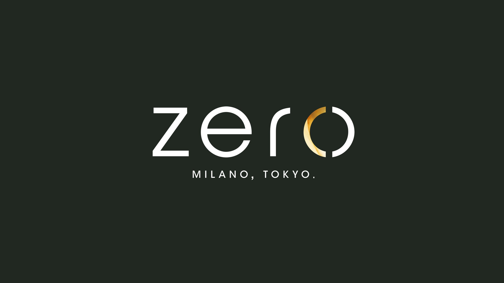
Zero
Zero, Milano Tokyo: un ristorante giapponese raccontato con un logo essenziale, una palette fatta di materia e un sito che fa venire fame.
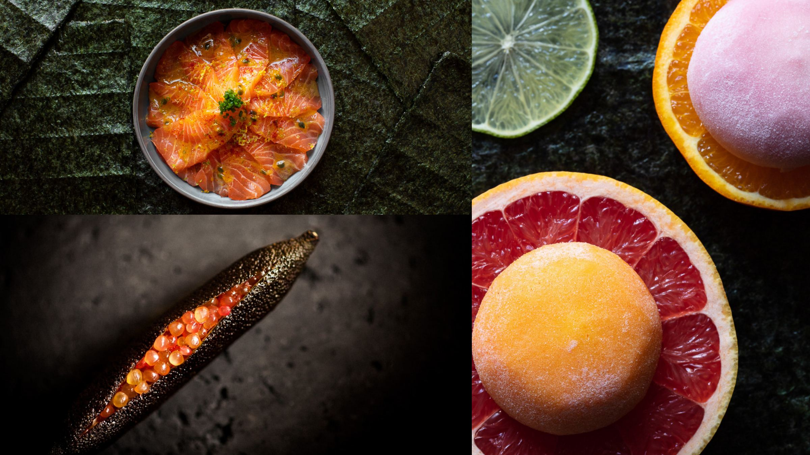
01 — Una palette di materia
Ogni colore nasce da una texture: pietra, lacca, oro, carta, ardesia e vinaccia.
Sei texture, sei colori
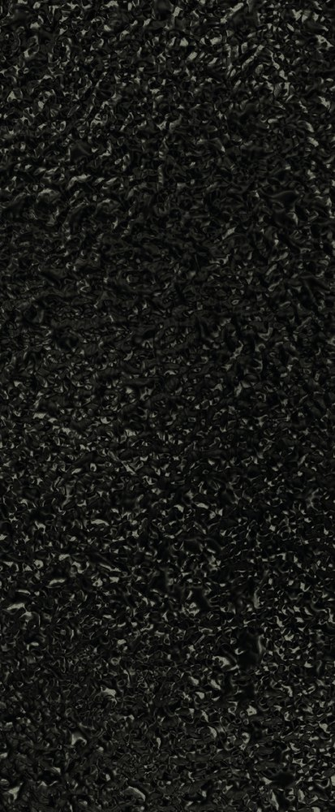
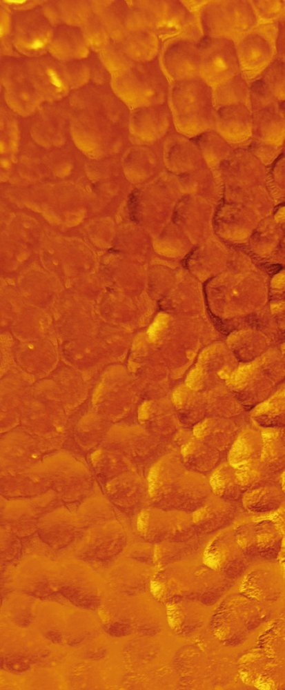
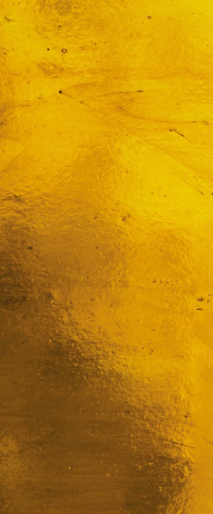
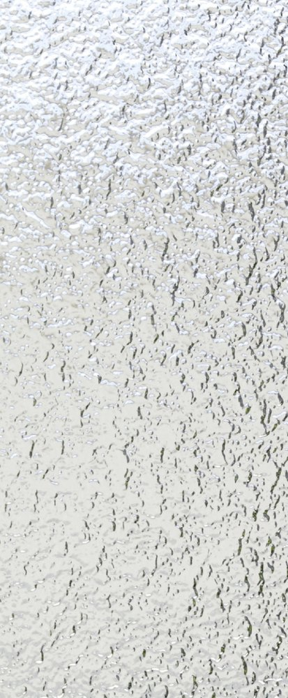
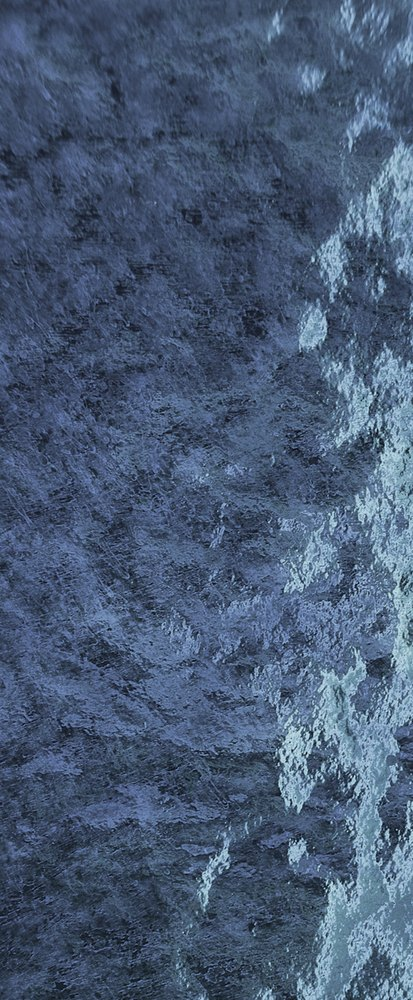
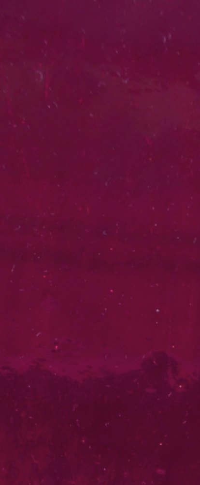
02 — Il marchio
Un lettering pulito e una o che si apre come una parentesi d’oro.
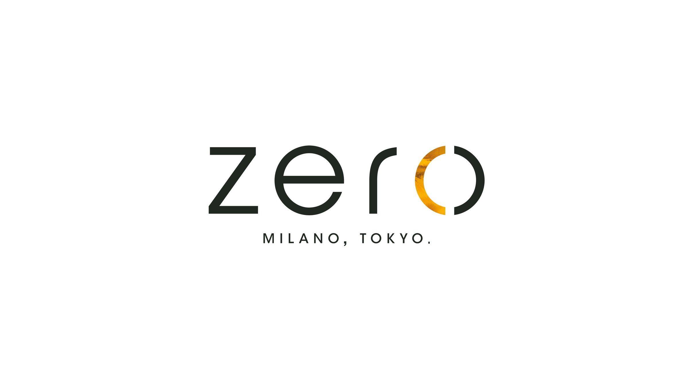
03 — Packaging
Kraft, bianco e oro: il marchio diventa sigillo su zuppe, scatole e biglietti.
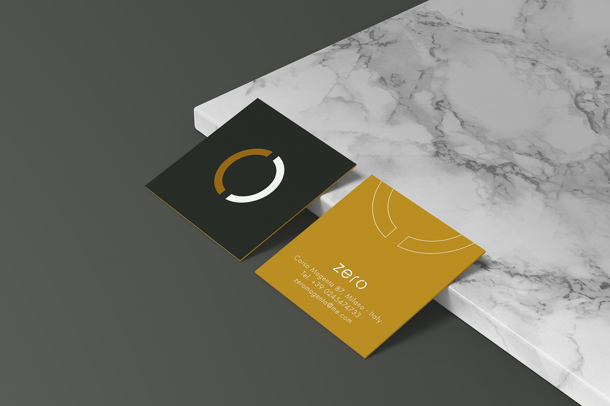
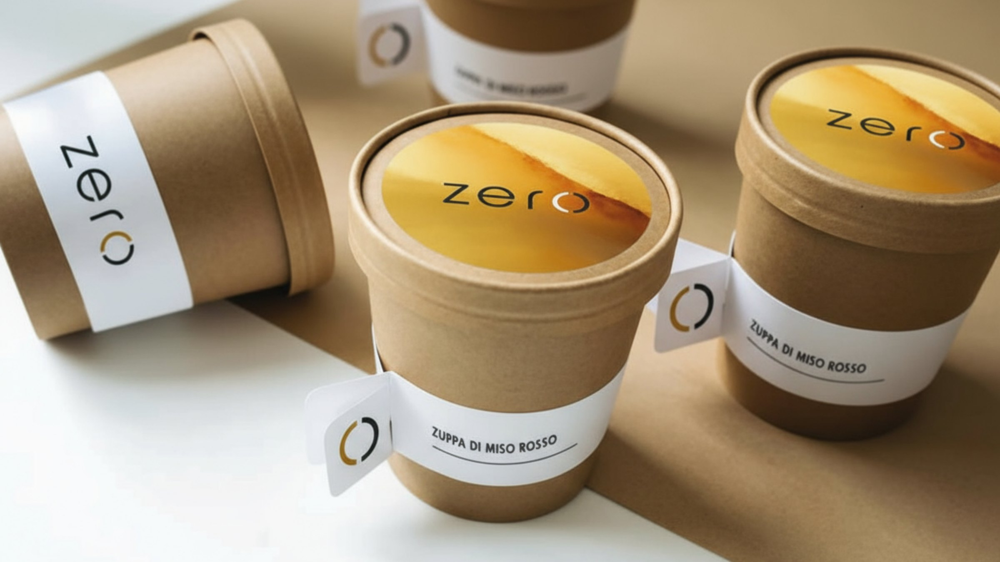
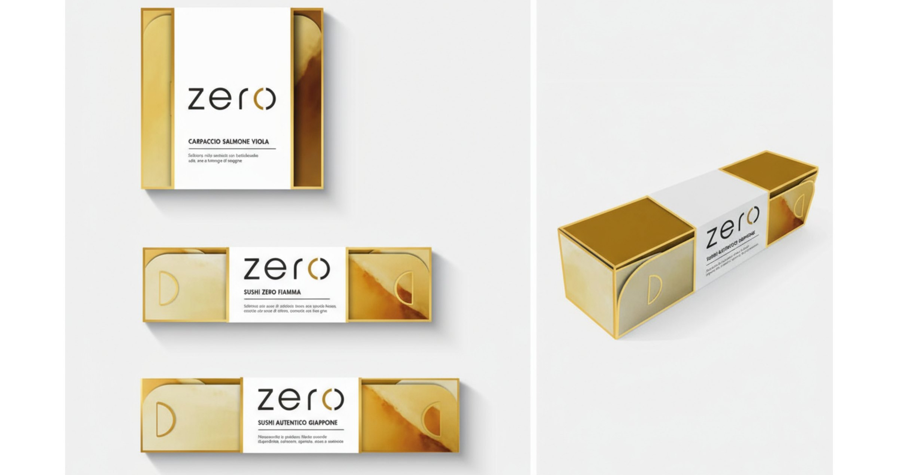
04 — Il sito
Fotografia piena, blocchi di colore e il menu a portata di mano su ogni schermo.
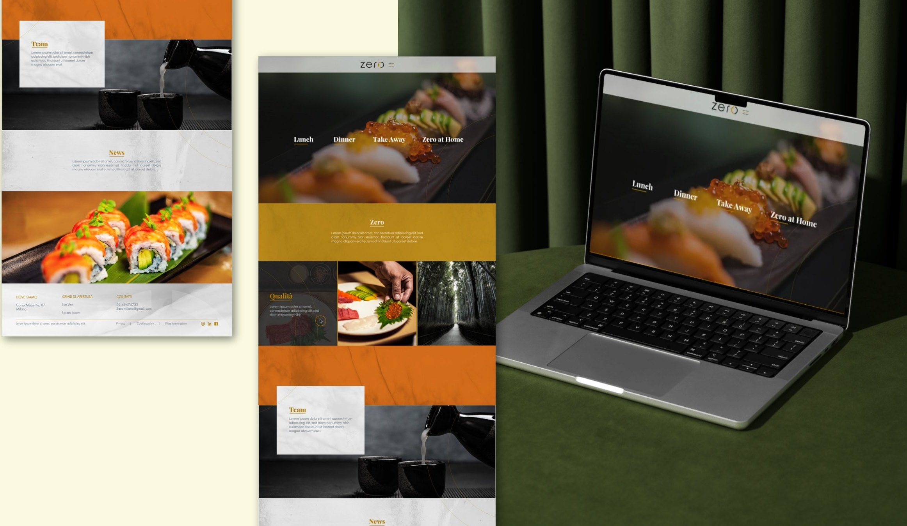
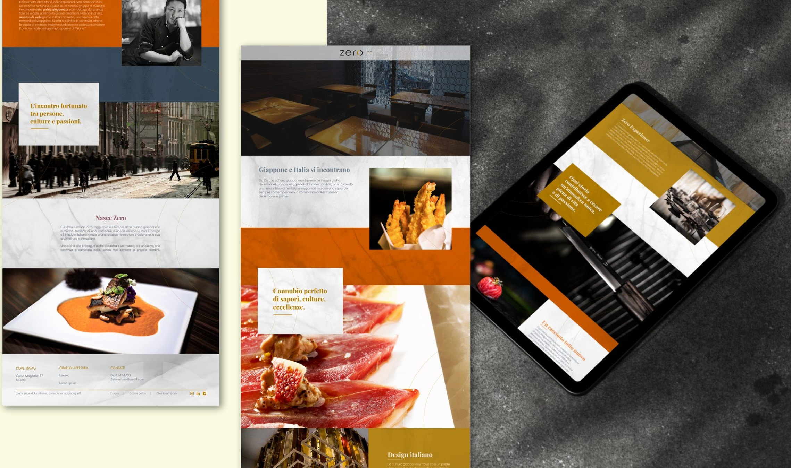